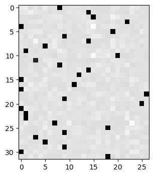
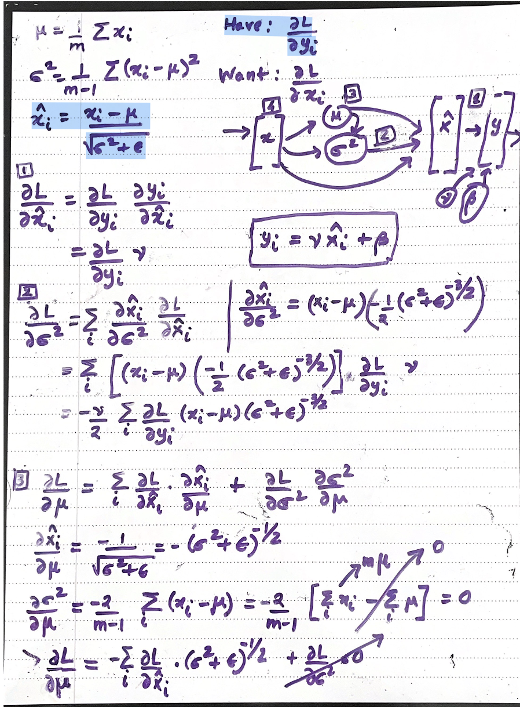
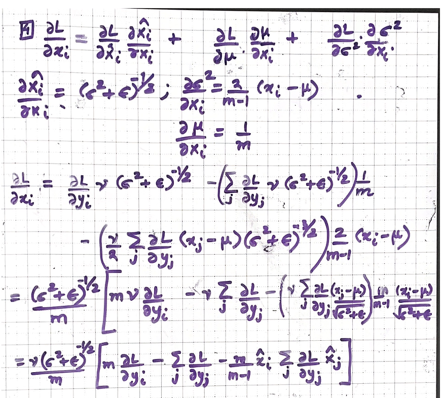

import torch
import torch.nn.functional as F
import matplotlib.pyplot as plt # for making figuresMakemore Part 4
Becoming a backprop ninja
Before we go on to RNN, which are universal approximators, we would like to have a good intuitive understanding of the activations of a neural net during training and especially the gradients that are flowing backwards, how they behave and what they look like. This is required to understand why RNNs are not easily optimizable with the first order gradient based techniques that we use all the time.
words = open('../names.txt','r').read().splitlines()
words[:8]['emma', 'olivia', 'ava', 'isabella', 'sophia', 'charlotte', 'mia', 'amelia']len(words)32033# build the vocabulary of characters and mappings to/from integers
chars = sorted(list(set(''.join(words))))
stoi = {s:i+1 for i,s in enumerate(chars)}
stoi['.'] = 0 #add special dot character to the vocabulary
itos = {i:s for s,i in stoi.items()}
vocab_size = len(itos)
print(itos)
print(vocab_size){1: 'a', 2: 'b', 3: 'c', 4: 'd', 5: 'e', 6: 'f', 7: 'g', 8: 'h', 9: 'i', 10: 'j', 11: 'k', 12: 'l', 13: 'm', 14: 'n', 15: 'o', 16: 'p', 17: 'q', 18: 'r', 19: 's', 20: 't', 21: 'u', 22: 'v', 23: 'w', 24: 'x', 25: 'y', 26: 'z', 0: '.'}
27# build the dataset
block_size = 3 # context length: how many characters do we take to predict the next one?
def build_dataset(words):
X, Y = [], []
for w in words:
context = [0] * block_size
for ch in w + '.':
ix = stoi[ch]
X.append(context)
Y.append(ix)
context = context[1:] + [ix] # crop and append
X = torch.tensor(X)
Y = torch.tensor(Y)
print(X.shape, Y.shape)
return X, Y
import random
random.seed(42)
random.shuffle(words)
n1 = int(0.8*len(words))
n2 = int(0.9*len(words))
Xtr, Ytr = build_dataset(words[:n1]) # 80%
Xdev, Ydev = build_dataset(words[n1:n2]) # 10%
Xte, Yte = build_dataset(words[n2:]) # 10%torch.Size([182625, 3]) torch.Size([182625])
torch.Size([22655, 3]) torch.Size([22655])
torch.Size([22866, 3]) torch.Size([22866])The line of code AK takes issue with is the loss.backward(). While in Micrograd we did the backward pass at the level of scalars next we will work to write our backward pass manually on the level of tensors.
Stop: 1m07s/1h55m23s
# utility function we will use later when comparing manual gradients to PyTorch gradients
def cmp(s, dt, t):
ex = torch.all(dt == t.grad).item()
app = torch.allclose(dt, t.grad)
maxdiff = (dt - t.grad).abs().max().item()
print(f'{s:15s} | exact: {str(ex):5s} | approximate: {str(app):5s} | maxdiff: {maxdiff}')n_embd = 10 # the dimensionality of the character embedding vectors
n_hidden = 64 # the number of neurons in the hidden layer of the MLP
g = torch.Generator().manual_seed(2147483647) # for reproducibility
C = torch.randn((vocab_size, n_embd), generator=g)
# Layer 1
W1 = torch.randn((n_embd * block_size, n_hidden), generator=g) * (5/3)/((n_embd * block_size)**0.5)
b1 = torch.randn(n_hidden, generator=g) * 0.1 # using b1 just for fun, it's useless because of BN
# Layer 2
W2 = torch.randn((n_hidden, vocab_size), generator=g) * 0.1
b2 = torch.randn(vocab_size, generator=g) * 0.1
# BatchNorm parameters
bngain = torch.randn((1, n_hidden))*0.1 + 1.0
bnbias = torch.randn((1, n_hidden))*0.1
# Note: I am initializating many of these parameters in non-standard ways
# because sometimes initializating with e.g. all zeros could mask an incorrect
# implementation of the backward pass.
parameters = [C, W1, b1, W2, b2, bngain, bnbias]
print(sum(p.nelement() for p in parameters)) # number of parameters in total
for p in parameters:
p.requires_grad = True4137batch_size = 32
n = batch_size # a shorter variable also, for convenience
# construct a minibatch
ix = torch.randint(0, Xtr.shape[0], (batch_size,), generator=g)
Xb, Yb = Xtr[ix], Ytr[ix] # batch X,Y# forward pass, "chunkated" into smaller steps that are possible to backward one at a time
emb = C[Xb] # embed the characters into vectors
embcat = emb.view(emb.shape[0], -1) # concatenate the vectors
# Linear layer 1
hprebn = embcat @ W1 + b1 # hidden layer pre-activation
# BatchNorm layer
bnmeani = 1/n*hprebn.sum(0, keepdim=True)
bndiff = hprebn - bnmeani
bndiff2 = bndiff**2
bnvar = 1/(n-1)*(bndiff2).sum(0, keepdim=True) # note: Bessel's correction (dividing by n-1, not n)
bnvar_inv = (bnvar + 1e-5)**-0.5
bnraw = bndiff * bnvar_inv
hpreact = bngain * bnraw + bnbias
# Non-linearity
h = torch.tanh(hpreact) # hidden layer
# Linear layer 2
logits = h @ W2 + b2 # output layer
# cross entropy loss (same as F.cross_entropy(logits, Yb))
logit_maxes = logits.max(1, keepdim=True).values
norm_logits = logits - logit_maxes # subtract max for numerical stability
counts = norm_logits.exp()
counts_sum = counts.sum(1, keepdims=True)
counts_sum_inv = counts_sum**-1 # if I use (1.0 / counts_sum) instead then I can't get backprop to be bit exact...
probs = counts * counts_sum_inv
logprobs = probs.log()
loss = -logprobs[range(n), Yb].mean()
# PyTorch backward pass
for p in parameters:
p.grad = None
for t in [logprobs, probs, counts, counts_sum, counts_sum_inv, # afaik there is no cleaner way
norm_logits, logit_maxes, logits, h, hpreact, bnraw,
bnvar_inv, bnvar, bndiff2, bndiff, hprebn, bnmeani,
embcat, emb]:
t.retain_grad()
loss.backward()
losstensor(3.3420, grad_fn=<NegBackward0>)# Stop: 12m55s/1h55m23sThe idea here is to ALWAYS come up with a small example of 2 by 2 matrices that you can hand compute the derivatives. This allows us to see the pattern and then put that into the code.
Bessel’s correction is important when we have small batch sizes. There is a bug in Pytorch when we are using BatchNorm1D for small batch sizes because there isn’t a way to tell PyTorch to use the correction.
Observe the duality when a broadcast happens in the forward pass and then what happens in the backward pass (it turns into a sum) and vice versa.
#KS1 - there is broadcasting happening here
# c = a * b but with tensors
#a[3x3] * b[3x1] ---->
# a11*b1 a12*b1 a13*b1
# a21*b2 a22*b2 a23*b2
# a31*b3 a32*b3 a33*b3
# c[3x3]# a11 a12 a13 --> b1 (=a11+a12+a13)
# a21 a22 a23 --> b2 (=a21+a22+a23)
# a31 a32 a33 --> b3 (=a31+a32+a33)# dembcat.shape# emb = C[Xb]
# print(emb.shape, C.shape, Xb.shape)
# print(Xb[:5])# Exercise 1: backprop through the whole thing manually,
# backpropagating through exactly all of the variables
# as they are defined in the forward pass above, one by one
#------------------
# YOUR CODE HERE :)
#------------------
dlogprobs = torch.zeros_like(logprobs) #dlogprobs is shorthand for dL/dlogprobs (here L=loss)
dlogprobs[range(n), Yb] = -1./n
dprobs = (1./probs)*dlogprobs #dL/dprobs = (dlogprobs/dprobs) * dL/dlogprobs
dcounts_sum_inv = (counts * dprobs).sum(dim=1,keepdim=True) #KS1 dL/dcounts_sum_inv = (dprobs/dcounts_sum_inv)*dL/dprobs
# KS2: can't compare to dcounts yet since there is another branch
dcounts = (counts_sum_inv * dprobs) #KS2 dL/counts = (dprobs/dcounts)*dL/dprobs
dcounts_sum = (-counts_sum**-2) * dcounts_sum_inv #dL/counts_sum = (dcounts_sum_inv/dcounts_sum)*dL/dcounts_sum_inv
dcounts += torch.ones_like(counts)*dcounts_sum #dL/counts += (dcounts_sum/dcounts)*dL/dcounts_sum
dnorm_logits = counts * dcounts #dL/dnorm_logits = (dcounts/dnorm_logits)*dL/dcounts
# norm_logits = logits - logit_maxes # subtract max for numerical stability
# KS 3: broadcasting happens during the subtraction
dlogit_maxes = (-torch.ones_like(logit_maxes) * dnorm_logits).sum(dim=1,keepdim=True) #KS3 dL/dlogit_maxes = (dnorm_logits/dlogit_maxes) *(dL/dnorm_logits)
# dlogits = torch.ones_like(logits) * dnorm_logits #dL/dlogits = (dnorm_logits/dlogits) *(dL/dnorm_logits)
dlogits = dnorm_logits.clone()
# logit_maxes = logits.max(1, keepdim=True).values
# only allow the gradient to flow towards that logit column which was the maximum on any given example
# tmp = torch.zeros_like(logits)
# tmp[range(n),logits.argmax(dim=1)] = 1
# dlogits += tmp * dlogit_maxes #dL/dlogits += dlogit_maxes/dlogits * dL/dlogit_maxes
dlogits += F.one_hot(logits.max(dim=1).indices, num_classes = logits.shape[1]) * dlogit_maxes
# logits = h @ W2 + b2 # output layer
# Note the pattern of there being one term for every item
# in the expression above. And we have the use of the dlogits (global backward gradient)
# multiplying on the right hand sides
dh = dlogits @ W2.T # dL/dh = dlogits/dh * dL/dlogits
dW2 = h.T @ dlogits
db2 = dlogits.sum(dim=0)
# h = torch.tanh(hpreact)
dhpreact = (1.0 - h**2)* dh# dL/dhpreact = dh/dhpreact * dL/dh
# hpreact = bngain * bnraw + bnbias (ELEMENT WISE multiply with broadcasting here!!)
dbngain = (bnraw * dhpreact).sum(dim=0,keepdim=True) # dhpreact/bngain * dL/dhpreact
dbnraw = bngain * dhpreact
dbnbias = dhpreact.sum(dim=0,keepdim=True)
#bnraw = bndiff * bnvar_inv
dbnvar_inv = (bndiff * dbnraw).sum(dim=0,keepdim=True)
dbndiff = bnvar_inv * dbnraw
#bnvar_inv = (bnvar + 1e-5)**-0.5
dbnvar = (-0.5*((bnvar + 1e-5)**(-1.5)) * dbnvar_inv).sum(dim=0,keepdim=True)
#bnvar = 1/(n-1)*(bndiff2).sum(0, keepdim=True) # note: Bessel's correction (dividing by n-1, not n)
dbndiff2 = ( (1/(n-1)) * torch.ones_like(bndiff2) ) * dbnvar
#bndiff2 = bndiff**2
dbndiff += (2 * bndiff) * dbndiff2
# bndiff = hprebn - bnmeani
dbnmeani = (-1.*torch.ones_like(bnmeani) * dbndiff).sum(dim=0,keepdim=True)
dhprebn = dbndiff.clone()
#bnmeani = 1/n*hprebn.sum(0, keepdim=True)
dhprebn += ( (1/n) * torch.ones_like(hprebn) ) * dbnmeani
#hprebn = embcat @ W1 + b1
dembcat = dhprebn @ W1.T
dW1 = embcat.T @ dhprebn
db1 = dhprebn.sum(dim=0)
#embcat = emb.view(emb.shape[0], -1)
demb = dembcat.view(emb.shape)
# emb = C[Xb]
dC = torch.zeros_like(C)
for k in range(Xb.shape[0]): #iterate over each example
for j in range(Xb.shape[1]): #over each character in the context
ix = Xb[k,j] # look up the character's index
dC[ix] += demb[k,j] # deposit the gradient (multiple times if necessary) #1h25m50s
cmp('logprobs', dlogprobs, logprobs)
cmp('probs', dprobs, probs)
cmp('counts_sum_inv', dcounts_sum_inv, counts_sum_inv) #26m20s
cmp('counts_sum', dcounts_sum, counts_sum) #28m54s
cmp('counts', dcounts, counts) #32m28s
cmp('norm_logits', dnorm_logits, norm_logits) #33m10s
cmp('logit_maxes', dlogit_maxes, logit_maxes)
cmp('logits', dlogits, logits)#41m47s
cmp('h', dh, h)
cmp('W2', dW2, W2)
cmp('b2', db2, b2)
cmp('hpreact', dhpreact, hpreact)
cmp('bngain', dbngain, bngain)
cmp('bnraw', dbnraw, bnraw)
cmp('bnbias', dbnbias, bnbias)
cmp('bnvar_inv', dbnvar_inv, bnvar_inv)
cmp('bnvar', dbnvar, bnvar)
cmp('bndiff2', dbndiff2, bndiff2)
cmp('bndiff', dbndiff, bndiff)
cmp('bnmeani', dbnmeani, bnmeani)
cmp('hprebn', dhprebn, hprebn)
cmp('embcat', dembcat, embcat)
cmp('W1', dW1, W1)
cmp('b1', db1, b1)
cmp('emb', demb, emb)
cmp('C', dC, C)logprobs | exact: True | approximate: True | maxdiff: 0.0
probs | exact: True | approximate: True | maxdiff: 0.0
counts_sum_inv | exact: True | approximate: True | maxdiff: 0.0
counts_sum | exact: True | approximate: True | maxdiff: 0.0
counts | exact: True | approximate: True | maxdiff: 0.0
norm_logits | exact: True | approximate: True | maxdiff: 0.0
logit_maxes | exact: True | approximate: True | maxdiff: 0.0
logits | exact: True | approximate: True | maxdiff: 0.0
h | exact: True | approximate: True | maxdiff: 0.0
W2 | exact: True | approximate: True | maxdiff: 0.0
b2 | exact: True | approximate: True | maxdiff: 0.0
hpreact | exact: True | approximate: True | maxdiff: 0.0
bngain | exact: True | approximate: True | maxdiff: 0.0
bnraw | exact: True | approximate: True | maxdiff: 0.0
bnbias | exact: True | approximate: True | maxdiff: 0.0
bnvar_inv | exact: True | approximate: True | maxdiff: 0.0
bnvar | exact: True | approximate: True | maxdiff: 0.0
bndiff2 | exact: True | approximate: True | maxdiff: 0.0
bndiff | exact: True | approximate: True | maxdiff: 0.0
bnmeani | exact: True | approximate: True | maxdiff: 0.0
hprebn | exact: True | approximate: True | maxdiff: 0.0
embcat | exact: True | approximate: True | maxdiff: 0.0
W1 | exact: True | approximate: True | maxdiff: 0.0
b1 | exact: True | approximate: True | maxdiff: 0.0
emb | exact: True | approximate: True | maxdiff: 0.0
C | exact: True | approximate: True | maxdiff: 0.0# 04/07/2023 - Stop: 20m55s/1h55m23s
# 04/08/2023 - Stop: 33m10s/1h55m23s
# 04/09/2023 - Stop: 55m14s/1h55m23s
# 04/10/2023 - Stop: 59m41s/1h55m23s
# 04/11/2023 - Stop: 1h26m27s/1h55m23s (backpropogated through the entire beast!!!)# Exercise 2: backprop through cross_entropy but all in one go
# to complete this challenge look at the mathematical expression of the loss,
# take the derivative, simplify the expression, and just write it out
# forward pass
# before:
# logit_maxes = logits.max(1, keepdim=True).values
# norm_logits = logits - logit_maxes # subtract max for numerical stability
# counts = norm_logits.exp()
# counts_sum = counts.sum(1, keepdims=True)
# counts_sum_inv = counts_sum**-1 # if I use (1.0 / counts_sum) instead then I can't get backprop to be bit exact...
# probs = counts * counts_sum_inv
# logprobs = probs.log()
# loss = -logprobs[range(n), Yb].mean()
# now:
loss_fast = F.cross_entropy(logits, Yb)
print(loss_fast.item(), 'diff:', (loss_fast - loss).item())3.341958999633789 diff: 0.0logits.shape, Yb.shape, (F.one_hot(Yb, num_classes = logits.shape[1])).shape(torch.Size([32, 27]), torch.Size([32]), torch.Size([32, 27]))# backward pass
#------------------
# YOUR CODE HERE :)
#------------------
# https://nasheqlbrm.github.io/blog/posts/2021-08-07-cross-entropy-loss-pytorch.html
# dlogits = (1./n) * ( probs - F.one_hot(Yb, num_classes = probs.shape[1]) )
dlogits = F.softmax(logits, 1)
dlogits[range(n), Yb] -= 1
dlogits /= n
cmp('logits', dlogits, logits) # I can only get approximate to be true, my maxdiff is 6e-9logits | exact: False | approximate: True | maxdiff: 7.450580596923828e-09logits.shape, Yb.shape(torch.Size([32, 27]), torch.Size([32]))F.softmax(logits, 1)[0]tensor([0.0712, 0.0899, 0.0199, 0.0502, 0.0185, 0.0781, 0.0247, 0.0341, 0.0174,
0.0312, 0.0381, 0.0373, 0.0371, 0.0296, 0.0367, 0.0142, 0.0096, 0.0187,
0.0161, 0.0524, 0.0510, 0.0210, 0.0235, 0.0757, 0.0571, 0.0249, 0.0218],
grad_fn=<SelectBackward0>)# same as the previous cell except for the location of the label for the example (index (zero based)
# 8 in this case)
dlogits[0] * ntensor([ 0.0712, 0.0899, 0.0199, 0.0502, 0.0185, 0.0781, 0.0247, 0.0341,
-0.9826, 0.0312, 0.0381, 0.0373, 0.0371, 0.0296, 0.0367, 0.0142,
0.0096, 0.0187, 0.0161, 0.0524, 0.0510, 0.0210, 0.0235, 0.0757,
0.0571, 0.0249, 0.0218], grad_fn=<MulBackward0>)# dlogits is the amount of push and pull exerted on the probabilities
# we pull up the probability of the correct example and push down on
# the others in a way such that the sum of the pushes and pull sums to zero
dlogits[0].sum()tensor(4.1910e-09, grad_fn=<SumBackward0>)# Here the dark corresponds to a pull
# the lights correspond to the pushes.
# Thus, training a neural network can be thought of as some physical pulley
# system where these pushes and pull are gradually shaping the weights and biases
plt.figure(figsize=(4, 4))
plt.imshow(dlogits.detach(), cmap='gray')
# 04/12/2023 - Stop: 1h36m39s/1h55m23s# Exercise 3: backprop through batchnorm but all in one go
# to complete this challenge look at the mathematical expression of the output of batchnorm,
# take the derivative w.r.t. its input, simplify the expression, and just write it out
# forward pass
# before:
# bnmeani = 1/n*hprebn.sum(0, keepdim=True)
# bndiff = hprebn - bnmeani
# bndiff2 = bndiff**2
# bnvar = 1/(n-1)*(bndiff2).sum(0, keepdim=True) # note: Bessel's correction (dividing by n-1, not n)
# bnvar_inv = (bnvar + 1e-5)**-0.5
# bnraw = bndiff * bnvar_inv
# hpreact = bngain * bnraw + bnbias
# now:
hpreact_fast = bngain * (hprebn - hprebn.mean(0, keepdim=True)) / torch.sqrt(hprebn.var(0, keepdim=True, unbiased=True) + 1e-5) + bnbias
print('max diff:', (hpreact_fast - hpreact).abs().max())max diff: tensor(4.7684e-07, grad_fn=<MaxBackward1>) 
# backward pass
# before we had:
# dbnraw = bngain * dhpreact
# dbndiff = bnvar_inv * dbnraw
# dbnvar_inv = (bndiff * dbnraw).sum(0, keepdim=True)
# dbnvar = (-0.5*(bnvar + 1e-5)**-1.5) * dbnvar_inv
# dbndiff2 = (1.0/(n-1))*torch.ones_like(bndiff2) * dbnvar
# dbndiff += (2*bndiff) * dbndiff2
# dhprebn = dbndiff.clone()
# dbnmeani = (-dbndiff).sum(0)
# dhprebn += 1.0/n * (torch.ones_like(hprebn) * dbnmeani)
# calculate dhprebn given dhpreact (i.e. backprop through the batchnorm)
# (you'll also need to use some of the variables from the forward pass up above)
# the summation over the j-s is over the training examples
dhprebn = bngain * bnvar_inv/n *( n*dhpreact - dhpreact.sum(0,keepdim=True) -
(n/(n-1)) * bnraw * ( dhpreact * bnraw ).sum(0,keepdim=True) )
cmp('hprebn', dhprebn, hprebn) # I can only get approximate to be true, my maxdiff is 9e-10hprebn | exact: False | approximate: True | maxdiff: 9.313225746154785e-10dhprebn.shape, bngain.shape, bnvar_inv.shape, dbnraw.shape, dbnraw.sum(0).shape(torch.Size([32, 64]),
torch.Size([1, 64]),
torch.Size([1, 64]),
torch.Size([32, 64]),
torch.Size([64]))# 04/13/2023 - Stop: 1h46m03s/1h55m23s
# 04/13/2023 - Stop: 1h50m08s/1h55m23s# Exercise 4: putting it all together!
# Train the MLP neural net with your own backward pass
# init
n_embd = 10 # the dimensionality of the character embedding vectors
n_hidden = 200 # the number of neurons in the hidden layer of the MLP
g = torch.Generator().manual_seed(2147483647) # for reproducibility
C = torch.randn((vocab_size, n_embd), generator=g)
# Layer 1
W1 = torch.randn((n_embd * block_size, n_hidden), generator=g) * (5/3)/((n_embd * block_size)**0.5)
b1 = torch.randn(n_hidden, generator=g) * 0.1
# Layer 2
W2 = torch.randn((n_hidden, vocab_size), generator=g) * 0.1
b2 = torch.randn(vocab_size, generator=g) * 0.1
# BatchNorm parameters
bngain = torch.randn((1, n_hidden))*0.1 + 1.0
bnbias = torch.randn((1, n_hidden))*0.1
parameters = [C, W1, b1, W2, b2, bngain, bnbias]
print(sum(p.nelement() for p in parameters)) # number of parameters in total
for p in parameters:
p.requires_grad = True
# same optimization as last time
max_steps = 200000
batch_size = 32
n = batch_size # convenience
lossi = []
# use this context manager for efficiency once your backward pass is written (TODO)
with torch.no_grad():
# kick off optimization
for i in range(max_steps):
# minibatch construct
ix = torch.randint(0, Xtr.shape[0], (batch_size,), generator=g)
Xb, Yb = Xtr[ix], Ytr[ix] # batch X,Y
# forward pass
emb = C[Xb] # embed the characters into vectors
embcat = emb.view(emb.shape[0], -1) # concatenate the vectors
# Linear layer
hprebn = embcat @ W1 + b1 # hidden layer pre-activation
# BatchNorm layer
# -------------------------------------------------------------
bnmean = hprebn.mean(0, keepdim=True)
bnvar = hprebn.var(0, keepdim=True, unbiased=True)
bnvar_inv = (bnvar + 1e-5)**-0.5
bnraw = (hprebn - bnmean) * bnvar_inv
hpreact = bngain * bnraw + bnbias
# -------------------------------------------------------------
# Non-linearity
h = torch.tanh(hpreact) # hidden layer
logits = h @ W2 + b2 # output layer
loss = F.cross_entropy(logits, Yb) # loss function
# backward pass
for p in parameters:
p.grad = None
#loss.backward() # use this for correctness comparisons, delete it later!
# manual backprop! #swole_doge_meme
# -----------------
dlogits = F.softmax(logits, 1)
dlogits[range(n), Yb] -= 1
dlogits /= n
# 2nd layer backprop
dh = dlogits @ W2.T
dW2 = h.T @ dlogits
db2 = dlogits.sum(0)
# tanh
dhpreact = (1.0 - h**2) * dh
# batchnorm backprop
dbngain = (bnraw * dhpreact).sum(0, keepdim=True)
dbnbias = dhpreact.sum(0, keepdim=True)
dhprebn = bngain*bnvar_inv/n * (n*dhpreact - dhpreact.sum(0) - n/(n-1)*bnraw*(dhpreact*bnraw).sum(0))
# 1st layer
dembcat = dhprebn @ W1.T
dW1 = embcat.T @ dhprebn
db1 = dhprebn.sum(0)
# embedding
demb = dembcat.view(emb.shape)
dC = torch.zeros_like(C)
for k in range(Xb.shape[0]):
for j in range(Xb.shape[1]):
ix = Xb[k,j]
dC[ix] += demb[k,j]
grads = [dC, dW1, db1, dW2, db2, dbngain, dbnbias]
# -----------------
# update
lr = 0.1 if i < 100000 else 0.01 # step learning rate decay
for p, grad in zip(parameters, grads):
#p.data += -lr * p.grad # old way of cheems doge (using PyTorch grad from .backward())
p.data += -lr * grad # new way of swole doge TODO: enable
# track stats
if i % 10000 == 0: # print every once in a while
print(f'{i:7d}/{max_steps:7d}: {loss.item():.4f}')
lossi.append(loss.log10().item())
# if i >= 100: # TODO: delete early breaking when you're ready to train the full net
# break12297
0/ 200000: 3.8114
10000/ 200000: 2.1689
20000/ 200000: 2.4194
30000/ 200000: 2.4330
40000/ 200000: 1.9810
50000/ 200000: 2.3530
60000/ 200000: 2.3664
70000/ 200000: 2.0867
80000/ 200000: 2.3298
90000/ 200000: 2.0542
100000/ 200000: 1.9986
110000/ 200000: 2.3207
120000/ 200000: 1.9800
130000/ 200000: 2.4701
140000/ 200000: 2.3593
150000/ 200000: 2.2122
160000/ 200000: 1.9384
170000/ 200000: 1.8528
180000/ 200000: 1.9438
190000/ 200000: 1.8624# useful for checking your gradients
# This will require you to
# 1. take out the with torch.no_grad()
# 2. uncomment the loss.backward()
# 3. uncomment the first line and comment the second line for where we do the gradient update
# 4. and finally the portion at the end of the previous cell
# where we only want to do a 100 iterations
# for p,g in zip(parameters, grads):
# cmp(str(tuple(p.shape)), g, p)# calibrate the batch norm at the end of training
# because we didn't keep track of the running mean and variance
# in the training loop
with torch.no_grad():
# pass the training set through
emb = C[Xtr]
embcat = emb.view(emb.shape[0], -1)
hpreact = embcat @ W1 + b1
# measure the mean/std over the entire training set
bnmean = hpreact.mean(0, keepdim=True)
bnvar = hpreact.var(0, keepdim=True, unbiased=True)# evaluate train and val loss
@torch.no_grad() # this decorator disables gradient tracking
def split_loss(split):
x,y = {
'train': (Xtr, Ytr),
'val': (Xdev, Ydev),
'test': (Xte, Yte),
}[split]
emb = C[x] # (N, block_size, n_embd)
embcat = emb.view(emb.shape[0], -1) # concat into (N, block_size * n_embd)
hpreact = embcat @ W1 + b1
hpreact = bngain * (hpreact - bnmean) * (bnvar + 1e-5)**-0.5 + bnbias
h = torch.tanh(hpreact) # (N, n_hidden)
logits = h @ W2 + b2 # (N, vocab_size)
loss = F.cross_entropy(logits, y)
print(split, loss.item())
split_loss('train')
split_loss('val')train 2.0728228092193604
val 2.1120364665985107# sample from the model
g = torch.Generator().manual_seed(2147483647 + 10)
for _ in range(20):
out = []
context = [0] * block_size # initialize with all ...
while True:
# ------------
# forward pass:
# Embedding
emb = C[torch.tensor([context])] # (1,block_size,d)
embcat = emb.view(emb.shape[0], -1) # concat into (N, block_size * n_embd)
hpreact = embcat @ W1 + b1
hpreact = bngain * (hpreact - bnmean) * (bnvar + 1e-5)**-0.5 + bnbias
h = torch.tanh(hpreact) # (N, n_hidden)
logits = h @ W2 + b2 # (N, vocab_size)
# ------------
# Sample
probs = F.softmax(logits, dim=1)
ix = torch.multinomial(probs, num_samples=1, generator=g).item()
context = context[1:] + [ix]
out.append(ix)
if ix == 0:
break
print(''.join(itos[i] for i in out))carmah.
amori.
kifirmili.
taty.
skanden.
jazhitlangelynn.
kaeli.
nellara.
chaiiv.
kaleigh.
ham.
joce.
quinn.
salin.
alianni.
waterridearisi.
jaxenni.
sabee.
deci.
abette.# 04/13/2023 - Fin: 1h55m23s/1h55m23s